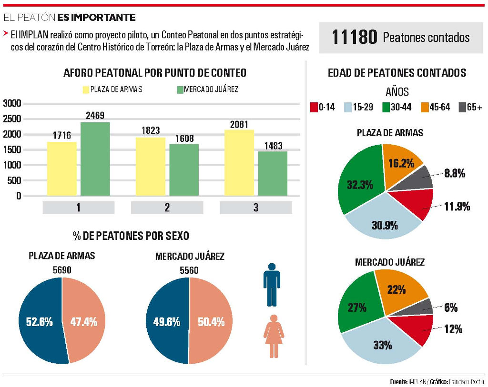

El desarrollo de las ciudades depende en gran medida, del conocimiento que se tenga de su gente. El comportamiento y características de la población son fundamentales para la planeación de ciudad.
La movilidad es uno de los componentes con mayor impacto en su transformación y el peatón el modo de transporte más básico y sostenible que suele alimentar al resto de los modos de transporte.
Actualmente en las ciudades desarrolladas, se realizan grandes esfuerzos para obtener información sobre el flujo vehicular, ciclista y peatonal, con el fin de mejorar la movilidad y disminuir los riesgos de accidentalidad.
El desarrollo de soluciones para disminuir los riesgos a los que se exponen los peatones por la interacción con los vehículos, requiere información cualitativa y cuantitativa, así como el desarrollo de metodologías de análisis y herramientas.
Por esta razón, a mediados de julio de 2015, el IMPLAN realizó como proyecto piloto, un Conteo Peatonal en dos puntos estratégicos del corazón del Centro Histórico de Torreón: la Plaza de Armas y el Mercado Juárez.
Esto, con la finalidad de obtener información y una caracterización del flujo peatonal de estos espacios públicos que identifican al primer cuadro de la ciudad, y así desarrollar entre otros beneficios, soluciones para disminuir riesgos de accidentes y transformar estos espacios en zonas más caminables y seguras.
Se realizó un conteo manual por observación directa en campo, aprovechando la oportunidad de tener el apoyo de dos practicantes colombianos de la Institución Universitaria CESMAG, de la Dirección de Movilidad no Motorizada y de un grupo de jóvenes de SEJUVE Laguna, quienes participaron como #VoluntariosParaHacerCiudad en el levantamiento físico de la información.
El trabajo se llevó a cabo el martes 14 de julio de 2015, el viernes 17 de julio de 2015 y el sábado 18 de julio de 2015, en un horario de las 8:00 am a las 8:00 pm.
De las muestras obtenidas en el conteo, se observó que las horas pico en ambos espacios fueron en el lapso de 1:00 a 2:00 pm y a las 7:00 pm, excepto los martes en el mercado donde la hora pico es a las 10:00 am.
En la zona donde se encuentran la Plaza de Armas y el Mercado Juárez, predominan las actividades comerciales y de servicios por lo que hay que recalcar que fuera de horarios laborales, si no hay algún evento, muy poca gente la transita.
Por lo tanto si se integran otras actividades que demandan el uso de estos espacios las 24 horas, podría reducirse en gran medida la percepción de inseguridad que existe.
El día con mayor afluencia en el mercado fue el martes y con menor, el sábado. Por el contrario, en la plaza el sábado fue el día que se identificó mayor afluencia y el martes menor.
Lo anterior debido a las actividades que se realizan en cada lugar, ya que mientras la plaza se usa como espacio de descanso o recreación, en el mercado predominan actividades comerciales y de servicios.
En cuanto a la composición de peatones, se registró con un 51.1% del sexo masculino, por lo que se percibe que existe una mezcla casi equitativa de hombres y mujeres en su mayoría entre 15 y 44 años aproximadamente.
Las dos áreas presentan menor afluencia de niños de 0 a 14 años y adultos mayores de 65 pues estos últimos suelen encontrarse con escaso movimiento.
El número total de peatones registrados durante los 3 días fue de 11,180. Se puede estimar que cada día, circulan más de 3,000 peatones en la Plaza de Armas y el Mercado Juárez.
Sin duda es suficiente razón para generar estrategias que consideren la importancia del peatón y es recomendable contar con mobiliario e infraestructura adecuada para gente de todas las edades con el fin de hacer la zona más confortable, segura y caminable.
En ciudades como Guadalajara, Puebla y Monterrey se ha optado por establecer zonas peatonales o de prioridad peatonal en sus centros históricos o zonas con significativa actividad terciaria o un intenso flujo de peatones.
Algunas de las estrategias utilizadas son la pacificación de tránsito como zonas 30, ampliación de banquetas y zonas peatonales, espacios compartidos, desincentivar flujos motorizados de paso, señalización y cruces seguros, etc.
Ciudades como esta podrían y deberían contar con información de ésta índole, disponible para el público en general, acerca de diferentes espacios públicos como mercados y plazas que contribuyan a un conocimiento más profundo de la dinámica urbana para muy diversos usos.
Infografía
